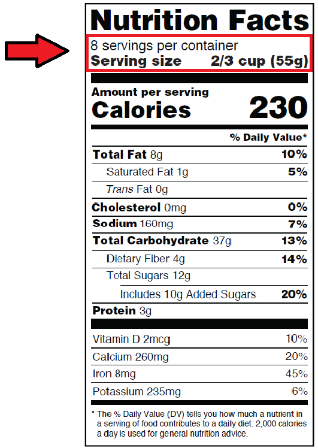

About Our Project
Our Global Perspectives project focuses on the pressing issue of misleading nutritional claims in Indian food advertisements. These claims often mislead consumers, particularly children and teens, into making unhealthy dietary choices. Our mission is to promote transparency, educate the public, and advocate for healthier options to ensure the well-being of all.
Key Findings:
- 80% of surveyed teens admitted to being influenced by colorful packaging and health claims.
- Many "healthy" labeled snacks were found to have high sugar or sodium content.

Our Story
To combat the growing issue of misinformation, our team conducted extensive research, interviews with nutritionists, and surveys among students. Collaborating with local businesses like 7-Eleven and leveraging social media platforms, we initiated awareness campaigns that reached over 7,000 viewers online.
In schools, we conducted interactive sessions to educate children about understanding food labels and making informed choices. Despite initial challenges, our efforts have been well-received, sparking positive changes in behavior and awareness.
How You Can Help
Join us in this mission to create a healthier community. Here’s how you can contribute:
- Follow and share our updates on Instagram.
- Educate yourself and others about misleading nutritional claims.
- Support local initiatives promoting transparency in food labeling.
Resources
Explore these valuable resources to learn more about nutrition and making informed choices: